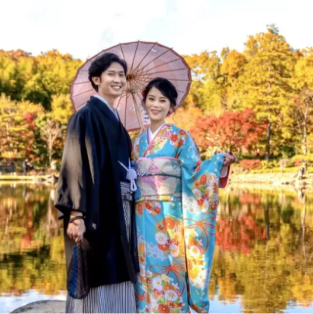
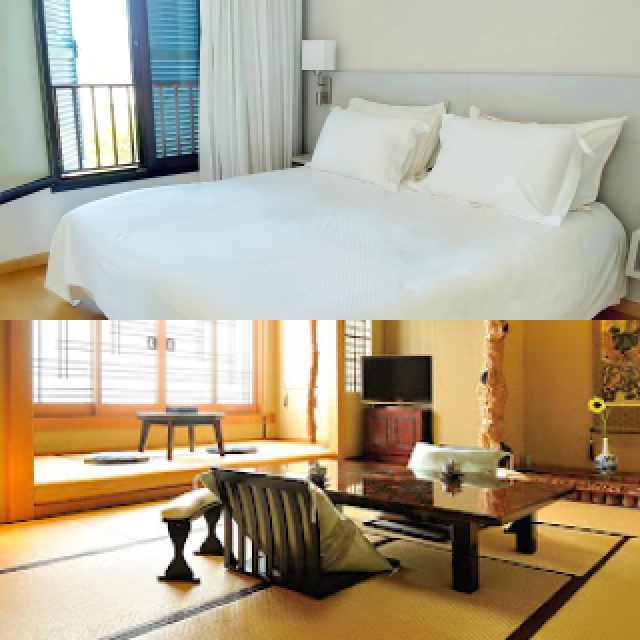
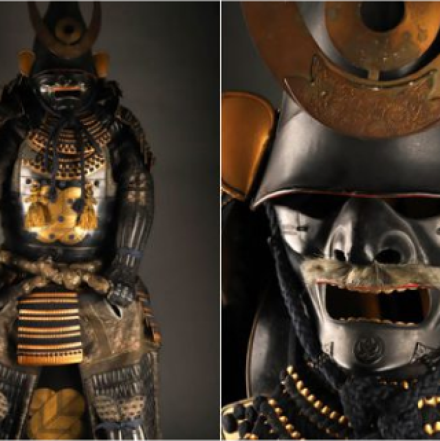
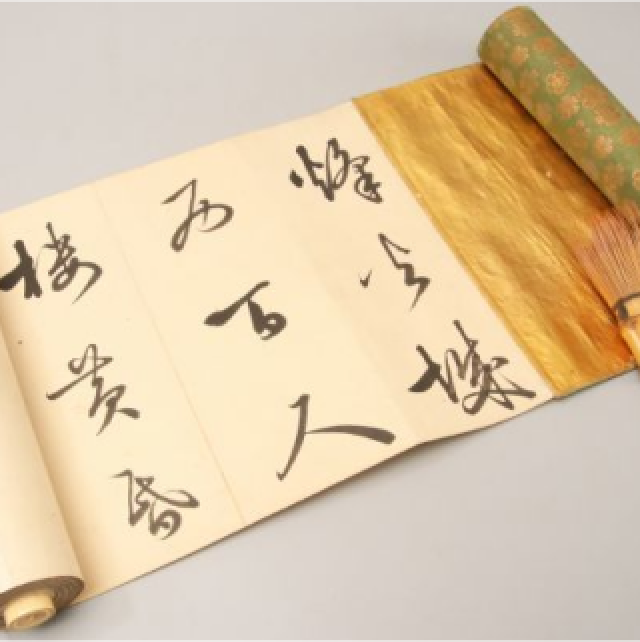

食事処
ホテル内の和食レストラン「花水庵」では、旬の食材を使った美しい和食をご堪能いただけます。さらに特別メニューとして、江戸時代の食文化を再現した「昔の味噌鍋」もご用意し、歴史の味わいを現代風にお楽しみいただけます。

着付け
当ホテルでは、江戸時代や和の文化に触れる豊富な体験メニューをご用意しています。武士の剣術や着物の着付け、茶道など、幅広い年齢層でお楽しみいただけます。ご家族やご友人と特別なひとときをお過ごしください。

部屋
和の趣が漂う「和室」と、モダンで快適な「洋室」からお選びいただけます。和室では畳の香りが心を和ませ、洋室はシンプルなデザインで快適な滞在をお約束します。どちらのお部屋からも日本庭園の美しい景色をご堪能ください。

甲冑販売
ホテル内の特設ショップ「甲冑ギャラリー」では、美しい職人技が光る本格的な甲冑を販売しております。インテリアとしても存在感があり、日本の歴史や武士の精神を身近に感じていただけるよう、スタッフが丁寧にご紹介いたします。

本屋
歴史好き必見の「巻物ライブラリー」では、江戸時代の巻物や美しい装丁の歴史・文学書を取り揃えています。伝統的な和紙の巻物を手に取る体験も可能。古の知識や物語に触れ、特別な一冊を見つけてお持ち帰りください。